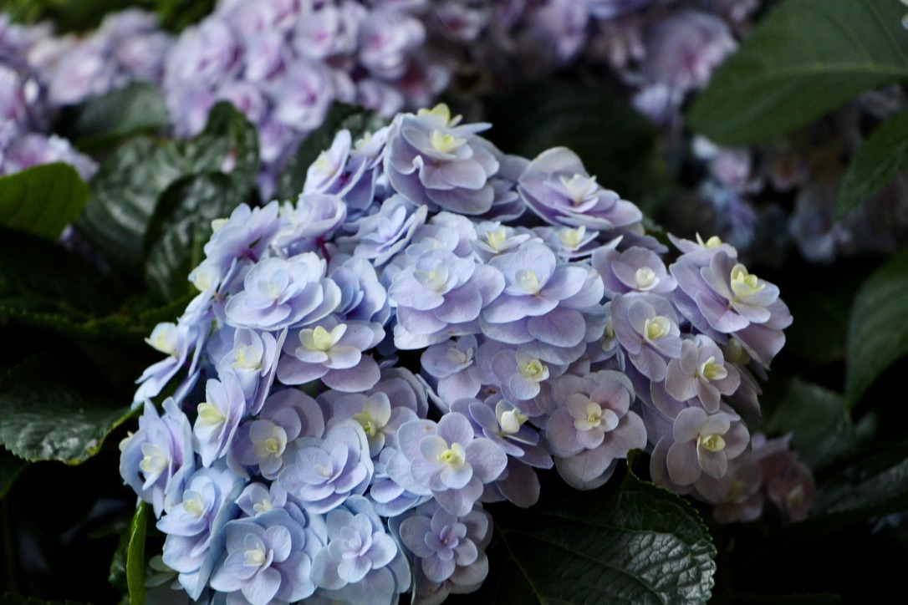
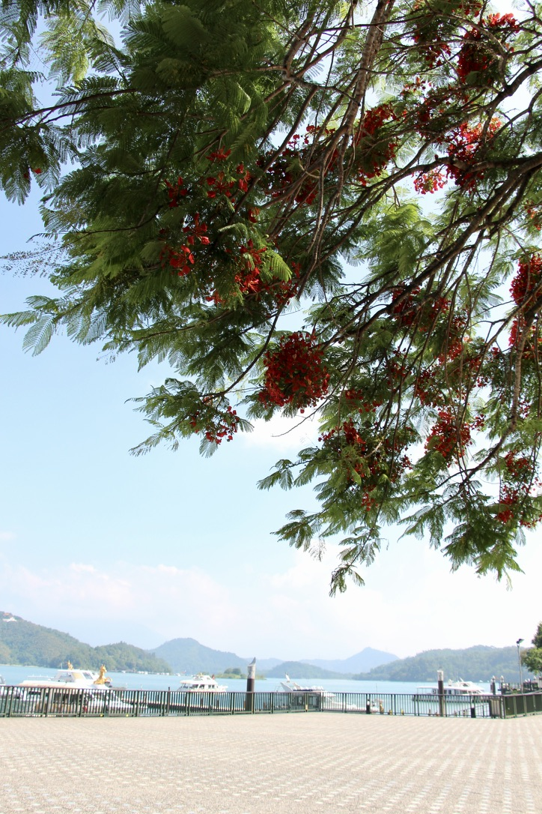
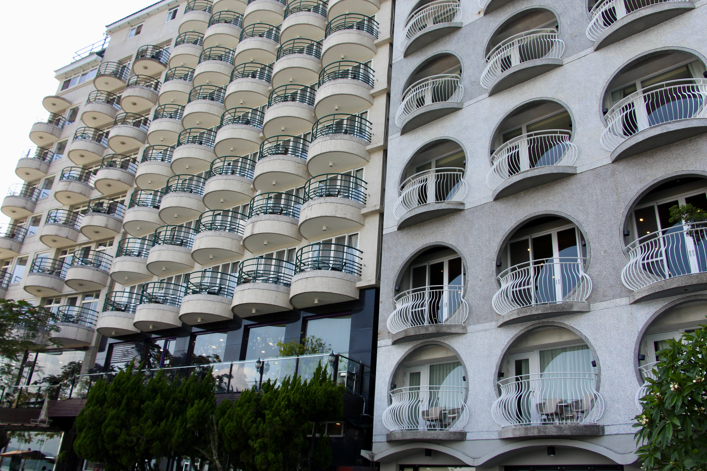
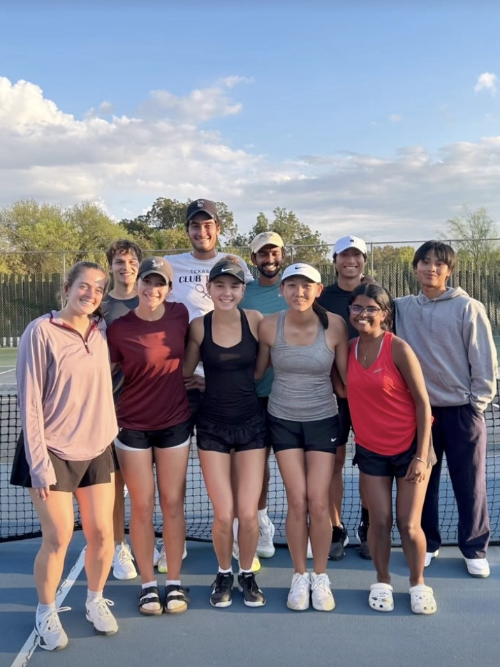
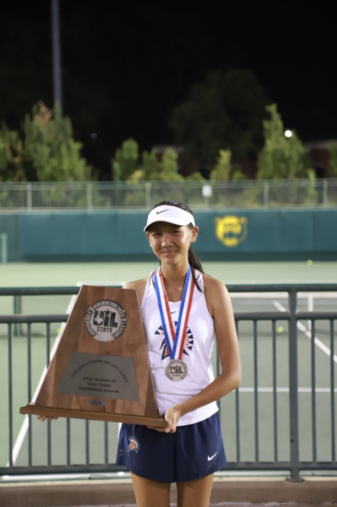
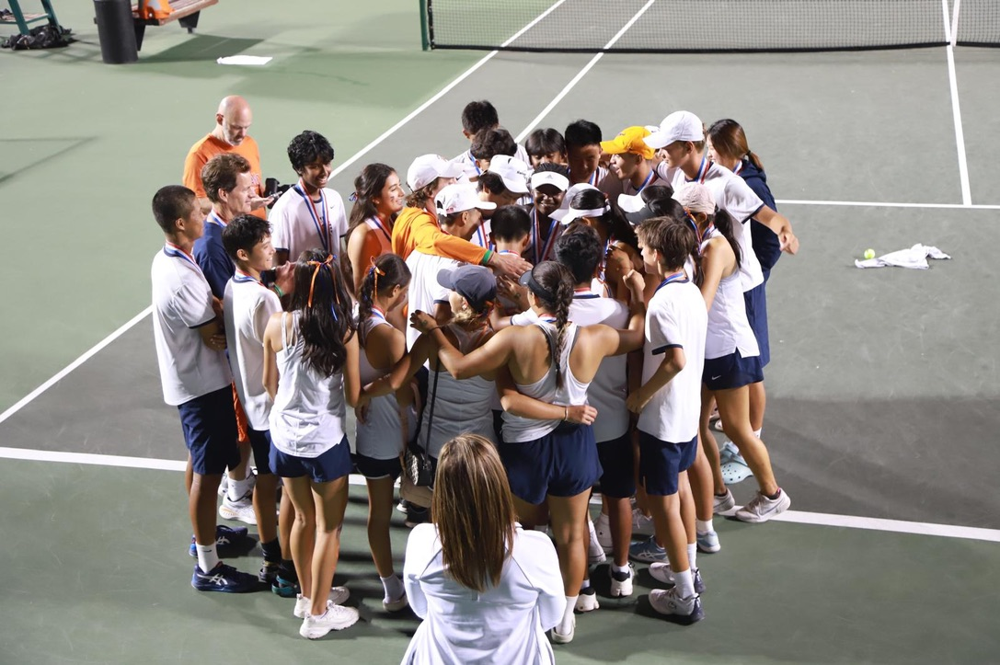
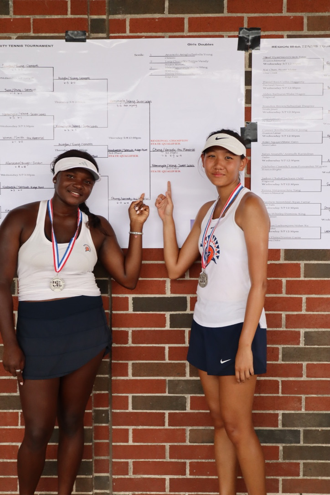
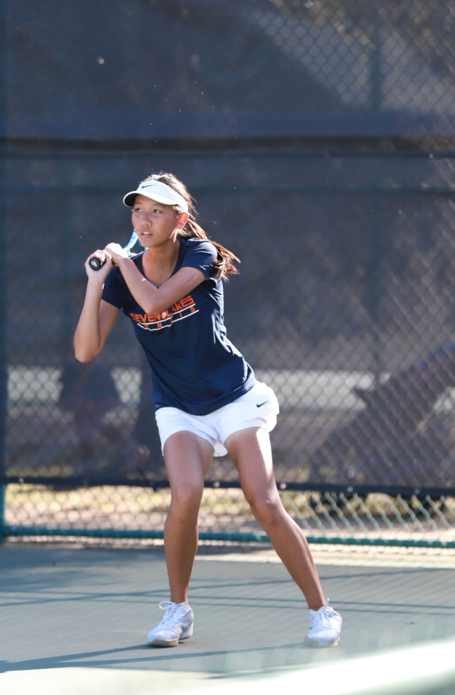

*hover on photo for more!
Photography
As an avid photographer shooting on a Canon EOS Rebel T4i, I love using my perspective to capture the small beauties of everyday life.







Tennis
Through years of playing competitive tennis in both team and individual settings, I've developed the discipline and mental resilience that continue to shape how I approach challenges, collaboration, and personal growth today.






